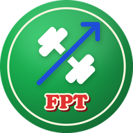

Privacybeleid · Privacy policy
Fitness Progress Tracker (FPT) · fptfit.app · laatst bijgewerkt / last updated: 26 oktober 2026
Nederlands
FPT is een gratis app om je trainingen bij te houden. Ze verzamelt zo weinig mogelijk: geen reclame, geen statistieken over je gebruik, geen trackers, geen cookies van anderen. Lettertypes en alle bestanden komen van fptfit.app zelf.
Wat FPT bewaart
- Wat je zelf ingeeft: trainingen (oefeningen, gewichten, herhalingen, cardio), records, schema's, doelen, notities en instellingen.
- Als je ze invult: lichaamsgewicht, tailleomtrek, geboortedatum, lengte en geslacht. Die worden alleen gebruikt voor de berekeningen in de app.
- Als je inlogt: je e-mailadres (of dat van je Google-account) en een technisch gebruikers-ID.
- Als je Strava koppelt: de toegangssleutels van Strava (alleen op de server, niet in de app) en je activiteiten die je laat ophalen.
- Als je intervals.icu koppelt: je Athlete ID en API-sleutel, en wat je laat ophalen (activiteiten, gewicht, slaap, hartslagvariatie, stappen).
Waar
- Op je toestel, in de opslag van je browser of van de geïnstalleerde app. Zonder account blijft alles daar.
- In je account, als je inlogt: in een databank van Supabase in de Europese Unie, zodat je gegevens op al je toestellen staan. Elke gebruiker kan alleen bij zijn eigen gegevens.
- In een gedeelde link, alleen als je zelf iets deelt (schema's, doelen, een training). De gegevens zitten in de link zelf, na het #-teken, en gaan niet naar een server van FPT.
Wie er verder bij komt
- Supabase (databank en inloggen) bewaart je account en je gegevens voor FPT, in de EU.
- GitHub Pages levert de website; zoals elke webserver ziet die technische gegevens zoals je IP-adres.
- Google, alleen als je met Google inlogt.
- Strava en intervals.icu, alleen als je ze zelf koppelt; FPT stuurt of haalt dan wat je vraagt.
- WhatsApp, Instagram of andere apps, alleen als je daar zelf iets naartoe deelt.
FPT verkoopt geen gegevens en geeft ze aan niemand anders.
Waarom (rechtsgrond)
FPT verwerkt je gegevens om de app te laten werken die jij gebruikt (artikel 6.1.b AVG/GDPR). Koppelingen met Strava of intervals.icu en het delen van links gebeuren alleen op jouw vraag.
Hoe lang
Tot je ze zelf verwijdert. Op je toestel: Instellingen → Back-up en gegevens → Gegevens op dit toestel: Wissen. In je account: zie hieronder.
Je account verwijderen
In de app: Instellingen → Account → Account verwijderen. Je account, al je gegevens in je account en de koppeling met Strava worden meteen en definitief verwijderd.
Lukt dat niet (bijvoorbeeld omdat je de app niet meer hebt)? Mail naar privacy@fptfit.app vanaf het e-mailadres van je account. Je account wordt dan binnen 30 dagen verwijderd.
Je rechten
Je mag je gegevens inzien, verbeteren, verwijderen en meenemen: in de app kun je alles aanpassen, en met Instellingen → Back-up en gegevens → Back-up: Downloaden krijg je al je gegevens in één bestand. Je kunt ook bezwaar maken of een klacht indienen bij de Gegevensbeschermingsautoriteit (gegevensbeschermingsautoriteit.be).
Beveiliging
Alle verkeer is versleuteld (HTTPS). De databank laat elke gebruiker alleen bij zijn eigen rijen, en de app voert geen code van anderen uit.
Kinderen
Ben je jonger dan 13 jaar, maak dan geen account zonder toestemming van een ouder. Zonder account blijft alles op je eigen toestel.
Contact
FPT · privacy@fptfit.app. Verandert dit beleid, dan staat de nieuwe versie hier met een nieuwe datum.
English
FPT is a free app to keep track of your workouts. It collects as little as possible: no ads, no usage analytics, no trackers, no third-party cookies. Fonts and all files are served by fptfit.app itself.
What FPT stores
- What you enter: workouts (exercises, weights, reps, cardio), records, programs, goals, notes and settings.
- If you fill them in: body weight, waist, date of birth, height and sex, used only for the calculations in the app.
- If you log in: your email address (or that of your Google account) and a technical user ID.
- If you link Strava: the Strava access tokens (on the server only, not in the app) and the activities you have it fetch.
- If you link intervals.icu: your athlete ID and API key, and what you have it fetch (activities, weight, sleep, heart rate variability, steps).
Where
- On your device, in the storage of your browser or the installed app. Without an account, everything stays there.
- In your account, if you log in: in a Supabase database in the European Union, so your data is on all your devices. Each user can only reach their own data.
- In a shared link, only when you share something yourself (programs, goals, a workout). The data is inside the link, after the # sign, and does not go to an FPT server.
Who else is involved
- Supabase (database and login) stores your account and data for FPT, in the EU.
- GitHub Pages serves the website; like any web server it sees technical data such as your IP address.
- Google, only if you log in with Google.
- Strava and intervals.icu, only if you link them yourself; FPT then sends or fetches what you ask for.
- WhatsApp, Instagram or other apps, only when you share something there yourself.
FPT does not sell data and gives it to no one else.
Why (legal basis)
FPT processes your data to run the app you use (Article 6(1)(b) GDPR). Linking Strava or intervals.icu and sharing links only happen at your request.
How long
Until you delete it. On your device: Settings → Backup and data → Data on this device: Erase. In your account: see below.
Deleting your account
In the app: Settings → Account → Delete account. Your account, all data in your account and the Strava link are deleted immediately and permanently.
Can't do that (for example because you no longer have the app)? Email privacy@fptfit.app from your account's email address. Your account will be deleted within 30 days.
Your rights
You may access, correct, delete and take your data with you: you can change everything in the app, and Settings → Backup and data → Backup: Download gives you all your data in one file. You can also object, or file a complaint with the Belgian Data Protection Authority (dataprotectionauthority.be).
Security
All traffic is encrypted (HTTPS). The database only lets each user reach their own rows, and the app runs no code from others.
Children
If you are under 13, do not create an account without a parent's permission. Without an account, everything stays on your own device.
Contact
FPT · privacy@fptfit.app. If this policy changes, the new version appears here with a new date.